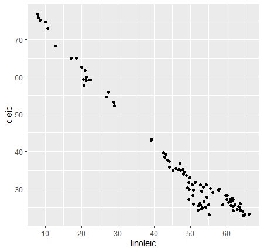
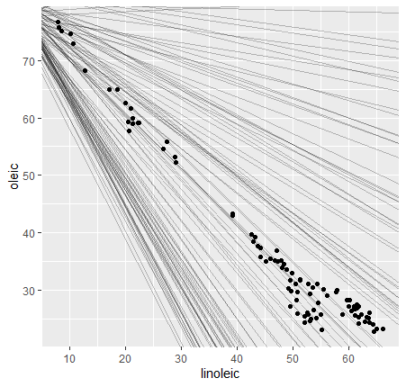
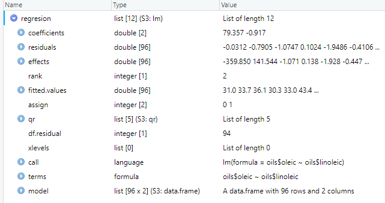
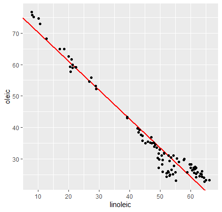

Modelar datos
Introducción
Modelar consiste en la aplicación de herramientas matemáticas para caracterizar un conjunto de datos y encontrar relaciones entre ellos, con las que somos capaces de:
- Predecir futuros resultados
- Encontrar patrones y diferencias entre variables
- Mejorar la visualización de los resultados
A la hora de modelar, existen dos partes a seguir:
-
Primero, debemos encontrar un patrón dentro de los datos, que puede ser desde una relación lineal simple (y = a·x + b) hasta una curva cuadrática (y = a·x^b), siendo x e y las variables conocidas y "a" y "b" los parámetros que podemos modificar para encontrar la relación.
-
Tras esto, conociendo el patrón, debemos encontrar el modelo que se ajusta a los datos (es decir, definir "a" y "b")
Nota
Hay que tener en cuenta que ningún modelo elegido es perfecto, simplemente es el que mejor se ajusta a los datos. Hay veces en el que el mejor modelo simplemente es malo y no tiene el por qué cumplirse en todos los casos.
En esta parte del tutorial, además de tidyverse, emplearemos el paquete modelr, incluido en R base y que nos dará algunas herramientas para comenzar a modelar. Además, vamos a usar modeldata, que incluye una serie de conjuntos de datos preparados para aprender a modelar. Instalamos los paquetes y los cargamos:
1 | |
1 2 3 | |
Modelado básico
Para este apartado, vamos a usar el conjunto de datos contenido en modeldata llamado "oils", que muestra las diferentes concentraciones de ácidos grasos en diferentes especies vegetales.
1 2 | |

Para comenzar a modelar nos puede venir bien representar gráficamente los datos con los que queremos trabajar. Por ejemplo, imaginemos que necesitamos estudiar las concentraciones de ácido oleico con respecto a las de linoleico. Vamos a representar estas variables en un diagrama de dispersión:
1 2 | |

Vemos que hay una clara tendencia lineal entre las variables (y = a·x + b). Para elegir la recta que mejor se ajusta, podemos generar multitud de ellas y elegirla al verla en la gráfica. Para ello, debemos generar rectas "aleatorias", para lo cual podemos usar la función runif para generar pendientes y puntos de corte con el eje y (es decir, "a" y "b" respectivamente)
1 | |
1 2 3 4 | |
1 | |
1 2 3 | |
Obtenemos algo parecido a esto:

Vemos que la mayoría de líneas generadas están lejos de ajustarse a los datos. Para seleccionar las buenas es necesario calcular la distancia vertical entre los puntos y las líneas, para lo cual es necesario crear funciones.
Este proceso es común a la mayoría de diferentes modelados que podemos hacer sobre un set de datos. Este proceso puede ser tedioso y requiere de bastante experiencia en el tema, tarea a la cual el alumno de bioquímica medio no está acostumbrado. Por ello, en este tutorial proponemos una forma de entrar en el mundo del modelado de datos sin tener que lidiar con programación demasiado compleja.
Modelado de regresión lineal
Un buen punto de partida para comenzar a modelar consiste en crear tus propias regresiones lineales en R. Sin embargo, antes de comenzar siempre es necesario hacer un test de correlación de Pearson sobre nuestros datos. Esto se hace fácilmente empleando la función cor.test(), de la siguiente forma:
1 | |
En nuestro caso, determinamos nuestras variables x e y indicando primero "oils" junto con el nombre de la variable empleando el símbolo "$":
1 | |
1 2 3 4 5 6 7 8 9 10 | |
El coeficiente de correlación cercano al valor -1 nos indica que existe una fuerte correlación lineal negativa, y el p-valor menor que 0.05 señala que el modelo lineal es válido. Ahora podemos plantear un modelo de regresión lineal con seguridad. Para ello, vamos a usar la función lm(). Esta función se usa de forma muy similar a la anterior:
1 | |
Definimos una variable para el modelo linear de nuestras variables de la siguiente forma:
1 2 | |

Para continuar con el análisis, hacemos un summary() a nuestra nueva variable, obteniendo lo siguiente:
1 | |
1 2 3 4 5 6 7 8 9 10 11 12 13 14 15 16 17 | |
Vemos como el R2 obtenido es de 0.9555, reafirmando la validez de nuestro modelo lineal. Podemos, finalmente, determinar cuál es la línea de ajuste de este conjunto de datos. Para ello, necesitamos los valores de pendiente y de corte con el eje y. Estos valores ya los hemos calculado al hacer el summary(), y se encuentran en el apartado coefficients:
1 | |
1 2 | |
Nota
Además de para encontrar modelos lineales, lm() sirve para realizar cualquier tipo de regresión, análisis de varianza y covarianza y otros cálculos estadísticos. Puedes profundizar más en cómo usar esta función aquí.
El valor de (Intercept) es el punto de corte con el eje y oils$linoleic es la pendiente. Sustituyendo estos valores en la ecuación de la recta (y = a·x + b), obtenemos la línea de regresión exacta para nuestros datos. Representándola obtenemos:
1 2 | |
1 2 3 | |

Razona:
Intenta añadir un cuadro de texto en la gráfica que el que se muestre la ecuación de la recta de regresión y el R2.
1ª Pista
Prueba a utilizar el comando annotate() tras el resto de comandos geom.
2ª Pista
Usa el comando annotate() de la siguiente forma:
1 | |
Respuesta
1 2 3 4 | |
Otros modelados
Como has podido observar, el modelado de datos, en definitiva, se trata de un proceso estadístico. En este tutorial hemos propuesto como ejemplo básico de modelado la regresión lineal, técnica muy empleada en cualquier rama de la ciencia. Evidentemente, existen muchos más tipos, y pueden enfocarse de maneras ilimitadas. Si sigues interesado en expandir tu conocimientos sobre este tema, te sugerimos que continúes con el apartado de modelado de “R for Data Science”, en concreto con el de interacción entre variables discretas y continuas.
Ejercicios
Ejercicios de repaso
Para ver si has entendido todo, intenta realizar estos ejercicios propuestos. Para saber cómo hacerlos, visita el apartado de "Realización de ejercicios". Tras esto, ejecuta el siguiente comando:
1 | |